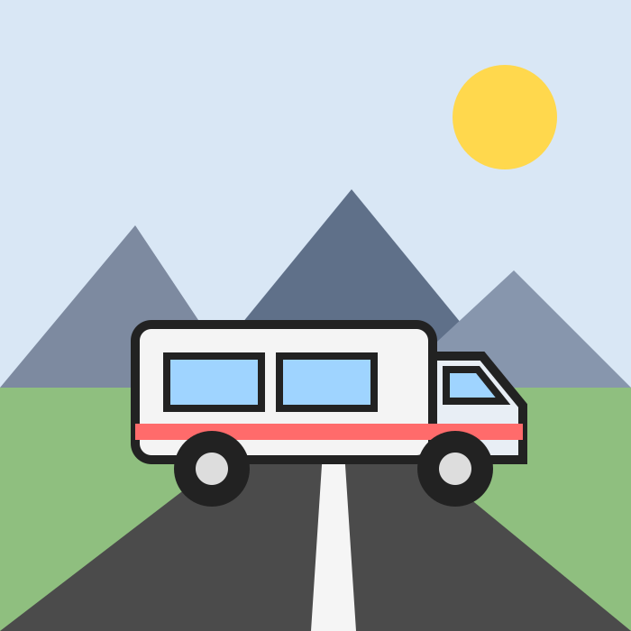

Фритрек и нулевой спринт: Подготовка к работе

стартЭто было самое начало пути. На этом этапе важно было проникнуться основами и настроиться на учёбу. И, возможно, подумать, как новые знания могут повлиять на ваше будущее.
Я помню, как сначала просто смотрел на задания и пытался понять, с какой стороны к ним подойти. Тогда важнее всего было не испугаться объёма и сделать первый шаг.